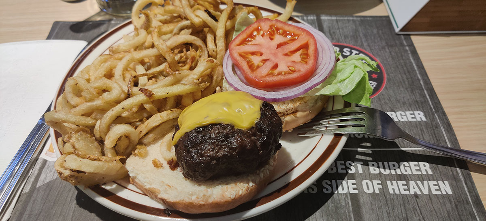
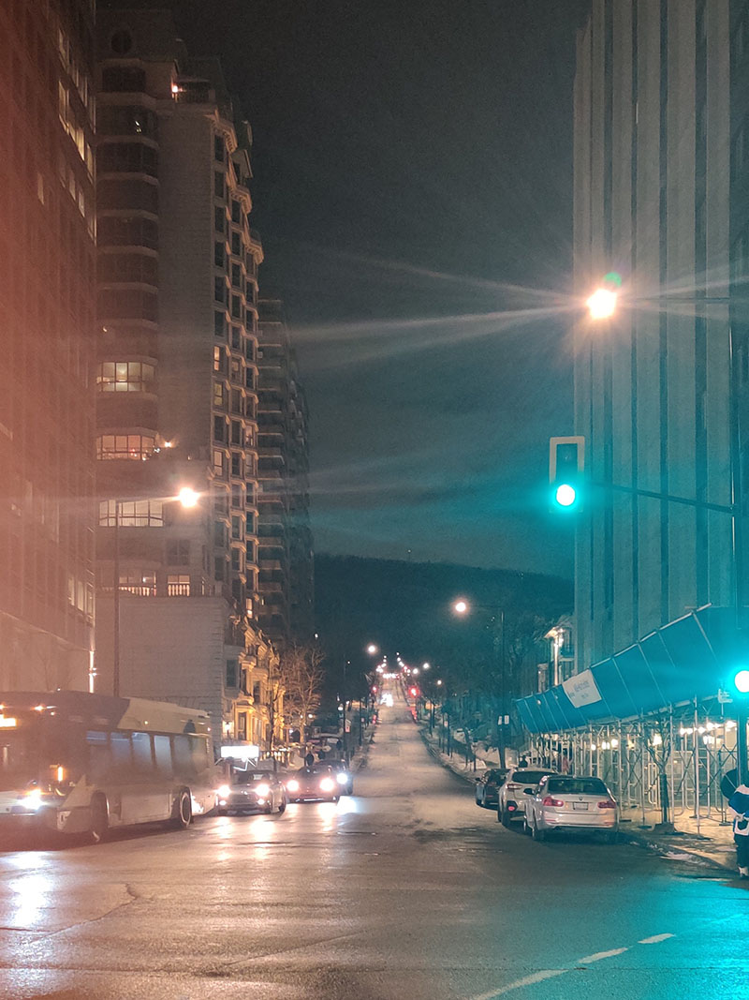
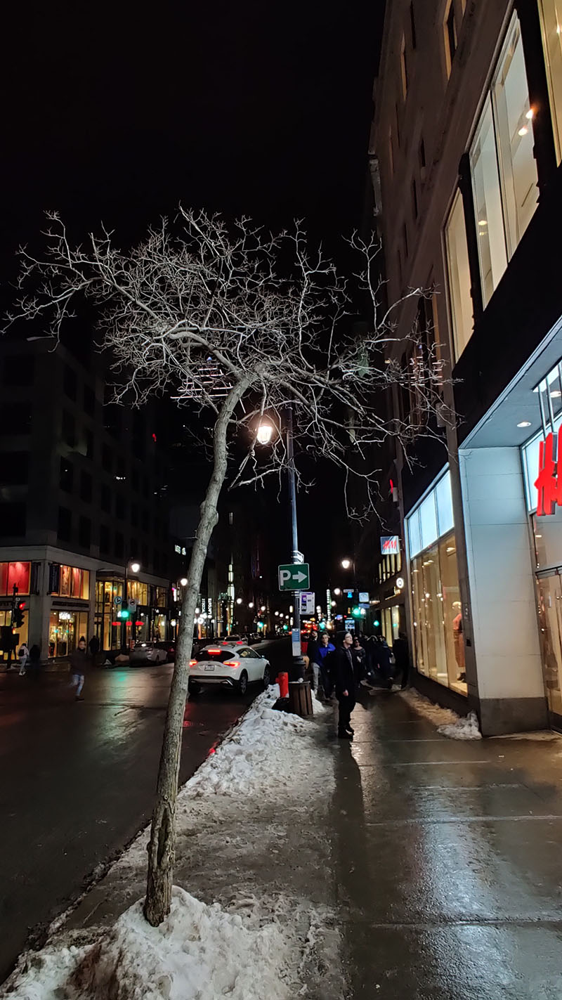

由于功课做的太晚，在春假前两天才开始做准备，所有铁路票早就售罄（而且viarail网站也在维护，暂时不能网上订票），这次旅游只能窝在巴士上面打瞌睡了。好在加拿大的鸡肋火车跑的和巴士一样快，价格却贵了好多，看到这里心里也就平衡了一些。这样看来坐巴士的唯一缺点恐怕就是转乘有点多、座位有点挤了吧。
说到时间长，从Waterloo到Montréal，真的要坐好久的巴士：早上六点就爬起来，先花三个小时坐Go Bus转乘一次到了Toronto，如果是周六或周中，Go Bus有经停更少的快速班次，这样到Toronto只需要两个小时，但是我周五才买票，已经买不到周六后续衔接的巴士票了。之后从Toronto巴士总站坐MegaBus到了Montréal，这一趟就去了6小时20分钟。
下午5点一刻终于到了蒙特利尔，提着箱子走了一公里左右到了Hi Montréal青年旅舍。当时是在国际青旅联盟网站上面找到这家青旅的，而且它是个加拿大连锁的品牌，之后去Québec City也是选的他们家的Hi Québec。
放好箱子之后我就准备出来找吃的了。好消息是青旅出来一个路口的距离就到了Downtown市中心，坏消息是我并没有做太多关于吃方面的功课，后来实在饿了也不知道选什么了，在Google地图上看到前面有家“汉堡店”叫Mister Steer，抱着填饱肚子的心态欣然前往，去了之后才发现他们家买的是那种精致的、分量够大的、拥有巨型安格斯肉饼的、还可以像牛排一样选熟度的汉堡！我要了一份五分熟的招牌，切开汉堡扒里面还泛着些粉色，价格我觉得也不算贵，20刀以内。上次吃大汉堡好像还是汉街刚开业没多久的时候，这餐饭算是歪打正着，留下了比较好的第一印象。

吃完饭也不知道晚上能干什么，索性去McGill大学转了一圈。之前朋友告诉过我McGill在“山上”，一去了才发现真的找不着路，谷歌地图把我导到了它们的最后面，是一个途径污水处理厂的环形上山路，然后有歪曲的楼梯下到大学校园里面。我竟然稀里糊涂走出来之后，才发现了正门在哪里。

上坡前Peel Street的一个路口，这一瞬间环境灯光非常漂亮，赶紧抓拍了下来，完全不用滤镜修饰
几个小时简单的市中心徒步，就已经让我意识到了蒙特利尔的特点：在这里很难找到像Toronto的Yonge St.那样宽阔平坦的大道，街道普遍不宽、建筑装修也更复古，颇有一番欧洲风味。这里也没有阴魂不散的、走过几个路口就又会出现的“Café Starbucks”（法语嘛）和Tim Hortons1，取而代之的是一家挨一家挤满整条街的独立小咖啡店。街边的门面都不会打开非常明亮的大灯，那些昏黄到忽略不计的小灯让我搞不清楚它们是不是已经在八九点就早早打烊。这种扑面而来的人文气息再加上满街的法语，让我立刻联想到了巴黎。因为巴黎给我的印象不太好，加上又是一个人天黑在外面散步，我就很自然地开始担心治安问题——会不会在拐角处某个涂满涂鸦、堆满垃圾的角落，有一个正在抽着廉价烟的流浪汉正在盯着你看；或者在一个接触不良的街灯下面寄居着一个危险的抢劫犯……但是我的疑虑马上就被打消了，因为在蒙特利尔，好多爸爸妈妈甚至喜欢晚上带着他们蹒跚学步的小孩儿们出来散步，任凭孩子们在Downtown之外一两个路口的路上——多半是犹如红灯绿酒的投影一般、显得格外阴森和危险的地方——恣意奔跑打闹。所以说加拿大依然是我印象里那个民风淳朴的加拿大，即便是在蒙特利尔这种风格完全不一样的地方也是如此。真好！

回去之后，和刚认识的隔壁铺的小哥哥D去青旅负一楼的酒吧喝了点酒。他和他兄弟R从多伦多来这边玩一个周末。这个晚上R去Downtown找朋友嗨了，他则呆在旅舍里。他刚刚完成学业，说准备之后参军几年体验一下。在酒吧里我们还和另一个英语不太好的法国朋友聊了会天。他本来是在法国做推销工作，但是一直感觉面子放不开，不太喜欢这份职业，最近来蒙特利尔体验一下新生活，也在忙着找个工作糊口。另外还有一个会讲英语、法语、意大利语等等好多语言的小哥，看上去也挺酷。
糙，为什么一个晚上的流水账可以被我写得这么长！没有地方写结尾了，今日就到这里戛然而止吧！
-
加拿大国民咖啡及面包圈连锁店。 ↩︎
Last modified on 2020-02-23